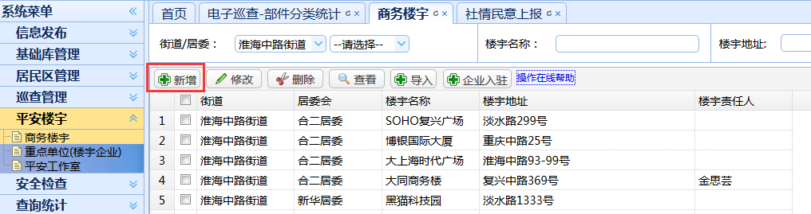
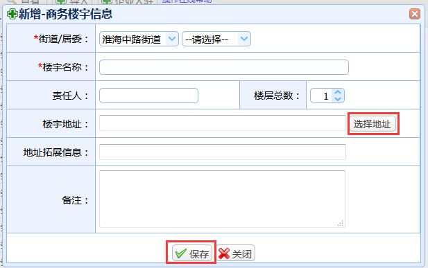
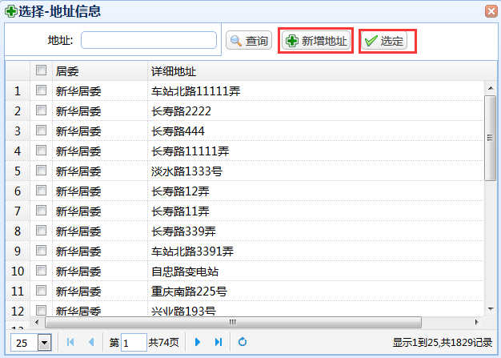
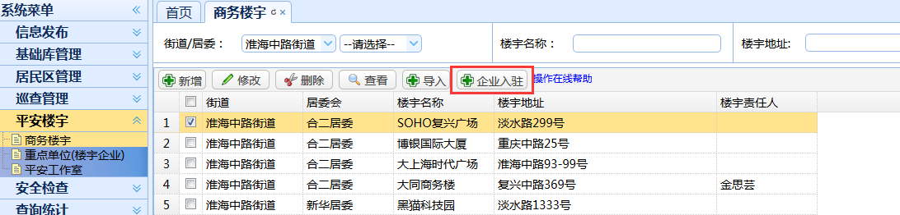
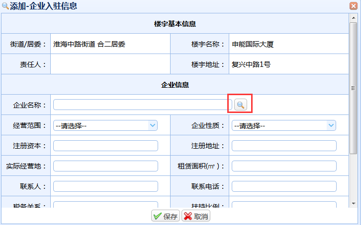
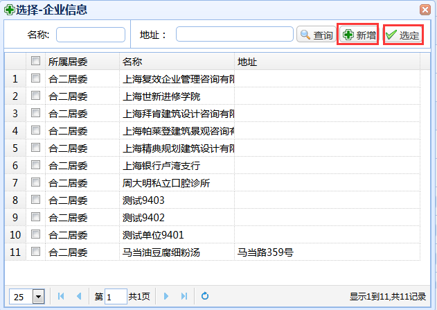

|
操作指南：
1、新增：点击“新增”按钮，随后会跳出商务楼宇信息新增的页面；



楼宇地址选择：点击“选择地址”按钮进入地址信息选择页面，勾选地址信息后点击“选定”按钮。可以点击“新增地址”按钮加入新地址。
信息填写完成后，点击“保存”按钮进行楼宇信息的保存，操作完成返回列表页面。
2、企业入驻：点击“企业入驻”按钮，随后会跳出楼宇企业登记的页面；



入驻企业选择：点击选择图标进入地址信息选择页面，勾选地址信息后点击“选定”按钮。可以点击“新增”按钮在企业库中加入新数据。
信息填写完成后，点击“保存”按钮进行楼宇入驻企业的保存，操作完成返回列表页面。
|